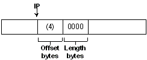
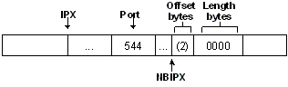

The pattern match filter notifies the driver to accept frames that have a specific pattern at a specific offset. You can specify a maximum of four detailed pattern matches, which can be combined in logical AND or OR statements for Network Monitor driver evaluation.
To implement pattern matches, use the following Network Monitor structures:
To evaluate an OR statement, combine two to four pattern matches an ANDEXP structure (PatternMatch1 || PatternMatch2 || PatternMatch3). To evaluate an AND statement, combine one to four ANDEXP structures and an EXPRESSION structure (AndExp1 && AndExp2).
A single pattern match is defined by the PATTERNMATCH structure. An individual match can operate in one of two ways.
Normally, the driver will take the offset basis (which can be OFFSET_BASIS_RELATIVE_TO_FRAME, OFFSET_BASIS_RELATIVE_TO_EFFECTIVE_PROTOCOL, OFFSET_BASIS_RELATIVE_TO_IPX, or OFFSET_BASIS_RELATIVE_TO_IP) and start counting there. The driver will count offset bytes from there and then match the data it finds with the first length bytes in PatternToMatch. If they are the same, and the PATTERN_MATCH_FLAGS_NOT flag is not set, then this pattern passes. If they are different and the PATTERN_MATCH_FLAGS_NOT has been set, the pattern passes. Otherwise this pattern fails.
Or:
If the PATTERN_MATCH_FLAGS_PORT_SPECIFIED flag is set, and the basis is set to OFFSET_BASIS_RELATIVE_TO_IPX or OFFSET_BASIS_RELATIVE_TO_IP, the comparison is more complex. First, the driver ensures that the offset basis protocol is there, then the driver verifies that the specified port matches the port in the frame. Finally the driver ensures that the PatternToMatch member matches as before, with the exception that the offset is from the end of IP or IPX. Note that if the basis is not one of these two, then the PATTERN_MATCH_FLAGS_PORT_SPECIFIED flag will be ignored, and the pattern will be evaluated as above.
To evaluate a single pattern match, an EXPRESSION structure must have one AndExp member containing a single pattern match.
Building the pattern match filter involves creating PATTERNMATCH structures and logically combining them with EXPRESSION and ANDEXP structures.
To write a PATTERNMATCH filter
This frame represents a standard offset.

The code fragment is implemented as:
Basis -> IP
Offset -> 4 (bytes)
Length -> 2 (bytes)
PatternToMatch[ ] = {x00, x00}
This frame depicts a port-specified offset (against IPX).

The example code is implemented as:
Port -> 544
Basis -> IPX
Offset -> 2 (bytes)
Length -> 2 (bytes)
PatternToMatch[ ] = {x00, x00}
Â
Â